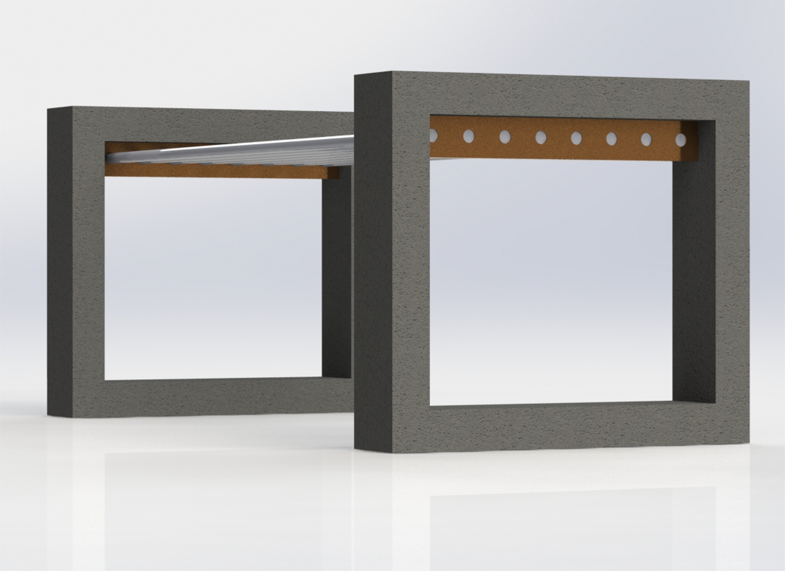
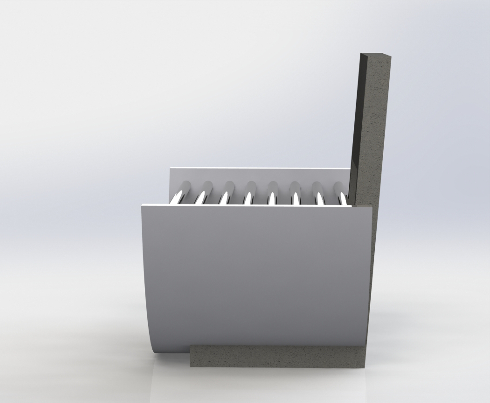

Design de Produto
Licenciatura em Artes Plásticas, Ramo de Escultura
Licenciatura em Design
Formação em Python _ 2020
Formação de Photoshop _ 2018_ Universidade do Porto
Formação de Desenho de Figura Humana _ 2017 _ Universidade do Porto
Formação de Fotografia em espaços interiores com Flash e exteriroes _ 2016
Responsavel por divulgação de ementa, fotografia e publicações nas redes instagram e facebook
Competências
Adapto-me facilmente a várias situações, e aprendo rápido
Trabalho bem em equipa, muito graças à experiencia nos vários empregos que tive e nos projetos de âmbito académico
Boa capaciadae de gerir o tempo: mantenho um part-time, faço parte de uma júnior empresa e sou colabora do Núcleo de Estudantes de Aveiro
Sou uma pessoa curiosa que se interessa e pesquisa em várias áreas
Linguas
Português (lingua materna)
Inglês
Interesses
Literatura
Séries e Filmes
Praticar desporto (Yoga, Ginásio e Ciclismo)
| Ano | Unidade Curricular Professores |
Projetos |
|---|---|---|
| 2021/2022 | Projeto em Design III Ivo Fonseco, Pedro, Nuno Dias |
|
| Projeto em Design II
Ivo Fonseco, Pedro, Nuno Dias, Paulo D'Uva |
||
| 2020/2021 | Projeto em Design I
Gonçalo Gomes |
|
| Tipografia
Olinda Martins |
||
| 2018 | Design de Produto
Escola Artística de Soares dos Reis |
Animação digital, Projeto em Design III, 2022
Cover Me- Lost in Nowhere, é a resposta a uma proposta de trabalho da Licenciatura da Universidade de Aveiro. O objetivo é ilustrar uma música com uma animação de 15 segundos.
A Musica: Lost in Nowhere de Hugo Silva, 2020 A animação conta uma história: o amigo que ajuda alguém em desespero. Sendo que a esfera representa o conforto da ajuda e os fios o descontrolo antes da ajuda.
Produto (Render), Projeto em Design II, 2021
Este projeto é a resposta á proposta de trabalho da U.C. Projeto II, desenvolver um posto de venda automático de bilhetes para moloiceiro.
O conceito por trás da bilheteira Margem é de enmoldurar a paisagem e focar o olhar o observador para um ângulo especifico. Desta maneira dá a conhecer pontos de interesse na cidade.
Produto (Render), Projeto em Design II, 2021


Desenvolvido em Contexto Académico, responde à proposta de desenvolver um abrigo urbano com recurso a materiais específicos.
A paragem de autocarro é feita de alumínio extrudado, ferro fundido, vidro temperado e concreto. Relaciona o usuário ao espaço. Com lugar para estacionar a bicicleta, banco para descanso e parede para informações.
Editorial, Projeto em Design I, 2021


Realizado no ano de 2021, na Universidade de Aveiro, o Dossier de Pesquisa sobre o vinho da Talha do Alentejo, tem um total de 60 páginas.
Sobriedade e elegância, com cores associadas à vinha e ao vinho.
Tipo de letra, Tipografia, 2020


Colmeia foi desenvolvida em 2021, na Universidade de Aveiro. Consiste numa fonte de base hexagonal, cuja a aparência direciona para os favos de mel. É uma fonte versátil, sendo que é uma fonte de composição uniforme e de facil leitura.
Renderização, Design de Produto, 2019
 


Colmeia foi desenvolvida em 2021, na Universidade de Aveiro. Consiste numa fonte de base hexagonal, cuja a aparência direciona para os favos de mel. É uma fonte versátil, sendo que é uma fonte de composição uniforme e de facil leitura.
e-mail: micaela.silva@ua.pt
Linkedin: https://www.linkedin.com/in/micaela-silva-8772a3217/
Behance: https://www.behance.net/micaela-silva?isa0=1#
telemóvel: +351 939 770 798